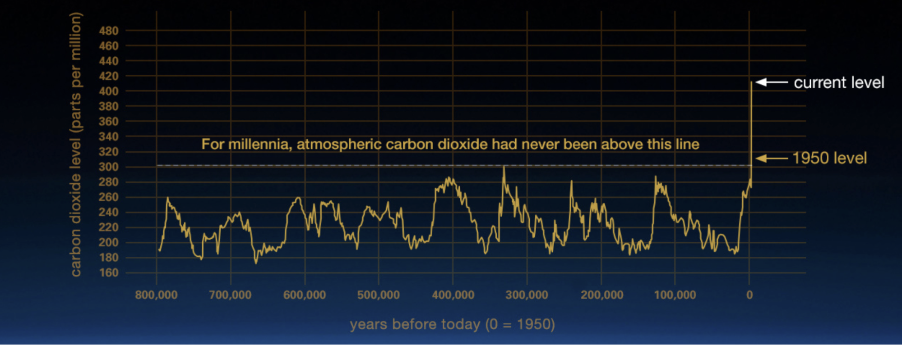
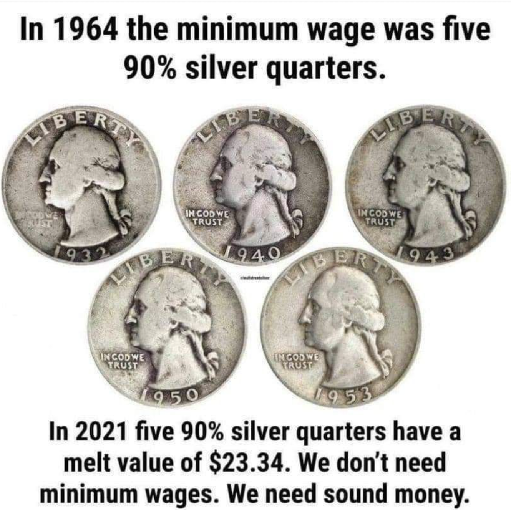

We already live in the matrix.

The world became insane, and most don’t question.
Our money systems are broken

|
Our major currencies are no longer Money
|
Interest is dangerous, it has the ability to paralyze economies, once countries have to raise debt to pay interest, it becomes super dangerous and quickly can lead to huge mountains of debt which takes away the ability for a country to use tax money to create wealth for its citizens.
Moral degradation of values
We have lost our ability to
- make our own decisions
- understand compassion
- speak the truth
- give without expecting back
- touch things without destroying them
- recognize ourselves as individual beings
- be kind without ulterior reasons
- talk in our homes or tribes as one family
- predict the weather by the sound of trees and birds
- smile and act like children; along in our lives
- grow a crop naturally, communicate with animals
- live with the nature around us as one
- believe that you can also become a great individual (without being a “star”)
- respect others, even if mistakes are made
Fear, lying & ego became the new normal.
Example
- Lying became an acceptable practice
- e.g. Silicon Valley: business rule 1,”fake it till you make it”
- Claim something which is not yours.
- e.g. there are millions of patents which have been granted on ideas which were not created by the new patent owners. It became a business of aggression & control.
Some of the root cause
- Money is the most addictive substance in our universe.
- Fear used as mechanism to control
- Misinformation (no more mechanism to recognise authenticity)
- Accepted use of human vulnerability to addiction (gaming, social media, marketing campaigns…)
- Education not in line with needs of future generation
- Unbalance between IQ,EQ and SQ. Personally we believe they are all equally important.
- People lost hope, often basic needs not covered, a new “phone” will not solve this.
Link to money
- Why is money a taboo? We don’t get educated nor know much about it.
- Making money became a purpose most live for. We believe this is wrong.
- Money can be beautiful, it's an energy exchange.
- Money represents “human time energy”, it's a tool for change.
- But the nature of money needs to change asap. Tools like Interest, derivatives and speculation are super dangerous. Most projects in blockchain space are just an enlargement of what already happened with our existing money system.
Climate Change - is real, and happening too fast

Some facts
- Within the next 2 decades, global temperatures are likely to rise 1.5 degrees Celsius.
- More than 1 million species are at risk of extinction by climate change.
- The concentration of CO2 in our atmosphere, as of July 2021, is the highest it has been.
- 7 warmest years in the 1880-2020 record have all occurred since 2014
- 11% of all global greenhouse gas emissions caused by humans are due to deforestation.
- 800 million people are currently vulnerable to climate change impacts, such as droughts, floods, heat waves, extreme weather events and sea-level rise.
- Coastal ‘blue carbon’ ecosystems are critical, 800,000 hectares of mangroves lost every year
- Climate change is already happening, and it’s detrimental to human life.
- Many leaders still aren’t taking it seriously enough.
- ONLY US$ 140 billion per year needed
- This is what it would take to make the changes humanity needs to adapt to a warming world. It may sound like a lot, but it’s less than 0.2% of global GDP.
- Nature is an untapped solution
- Tropical forests are incredibly effective at storing carbon, providing at least a third of the mitigation action needed 7 to prevent the worst climate change scenarios. Yet nature-based solutions receive only 3% of all climate funding.
- Carbon credits could be a good system BUT
- We need carbon removal = carbon net zero, suck carbon out of air.
- Today +90% of carbon credits are based on lowering emission, this is not good enough.
- There are simply not enough carbon removal projects and almost no attention is going to it. Building machines to suck carbon out of air is probably not the solution.
- Fight climate change, improve livelihoods — naturally
- Natural climate solutions such as restoring degraded forests could create as many as 39 jobs per million dollars spent — that's a job-creation rate more than six times higher than the oil and gas industry.
- Coastal ‘blue carbon’ ecosystems are critical
- Just 0.7% of the world’s forests are coastal mangroves, they store up to 10 times as much carbon per hectare as tropical forests.
Everyone may die at the end of horror movies, but we don’t have to
The blue or the red pill?

Everyone is talking about the metaverse these days, personally it makes me scared. Do we really need to become part of some virtual worlds controlled by a few large corporations? Will this resolve all the issues we really face?
A nice article, expresses it well, the author compares the metaverse and… the movie The Matrix:
The comparison could be a bit of a stretch, but let’s remember who we’re talking about: a man with no moral principles, whose business model is based on maximizing the time and level of interaction of users on his platforms to the point of generating, in many cases, documented psychological problems — see “The Social Dilemma” — and is even willing to change his company’s name in the hope that people will forget about the myriad issues related to Facebook and its negative associations. When it came to choosing between the growth of the company and the safety of its users, Mark Zuckerberg always had it crystal clear.
Facebook’s metaverse would be about getting people hooked on the electronic simulation projected a few centimeters from their eyes, which is completely immersive, and which would offer, in many cases, a parallel reality more attractive than their real lives. There are already too many cases of people obsessively consuming Facebook and Instagram, so what might we expect from a metaverse built by the same company and, presumably, based on the same principles underpinning its global empire? And what to make of an advertising model like Facebook’s applied to an environment like the metaverse, which people would only disconnect from in order to shovel some food down their throats as quickly as possible....
Source: https://medium.com/enrique-dans/the-metaverse-and-the-matrix-c7609196eddd
Do we have the courage to take the red pill?
https://www.youtube.com/watch?v=zE7PKRjrid4
Is this what we need?
Einstein: “Insanity: doing the same thing over and over again and expecting different results.”
The current planned iterations of the metaverse are nothing more than a different packaging of the world we already live in, nothing really changes.
- Fear Controls
- Fear as a “self” brainwashing tool
- Data is the new oil, to own a person’s data is to own their future
- Control information flow, control the masses
- Human vulnerability to addictions as driving force:
- Money is the most powerful and addictive drug in the world.
- Need of social acceptance, addicted to the “ego”, want people to like us.
We need a new system.
Maybe we need a purple pill. A pill from the heart.
Let's create a system which follows another paradigm:
| GOOD = Heart Driven | BAD = Fear Driven |
|---|---|
| Empowering | Controlling |
| Networks | Hierarchies |
| Transparency | Secrecy |
| Purpose, money as a gift. | Profit, money as a drug. |
| Give First, Receive Later | Take first, maybe Give Back Later |
| Collaborate. | Survival of the fittest |
| Sustainability | Unhealthy drive for over optimization=efficiency |
| The power is within us. We need to choose that we have a choice, we are not powerless. | Stardom, we need heroes, we want what they achieved, the so-called “way” out of the matrix. |
Our kids are afraid, they don’t see a future.
The world is a challenging place today, climate change is real, abuse of full countries is real, a constant war is going on, war has never been out of our life, we only choose to blind ourselves to it…
Our kids are afraid, they don’t see a future. The “matrix” we created together over the last 100 years, is crashing in front of them. They know and feel, financial systems are no longer reliable, interest created debt everywhere in such a way it enslaves people and countries, often their governments are unable to act and definitely not with right insight and values which relate to them, the planet is suffering because of abuse of its resources and complete lack of respect for its beauty, climate change is happening, …
Many kids are afraid, might choose to lose themselves in virtual fake worlds (gaming, social media, …), or hope to hit the jackpot thanks to crypto. Most don’t even dare to think about it, ignoring seems to be the easier option.
What is the start of the solution?
Do we need to clean rivers,
or do we need to raise awareness so people and companies will stop polluting?
Do we need to build machines to suck carbon out of the air
or maybe eating & consuming differently has more impact.
Do we need more debt to resolve our financial crisis,
or maybe we need to change the way we deal with money, money is a “taboo”,
most people don't know anything about Money, there are no classes about it,
money is “frozen time energy”and can be beautiful if created, exchanged and used well.
We believe the start of the solution is growing awareness.
Awareness about the planet and how our own actions bring positive or negative change.
Spiritual awareness about ourselves and our capabilities.
We don’t believe the solution will come from a government, a new hero or a large company, this has been tried over and over. We will stay on the wrong side of the table above.
Change starts with all of us, we need hope, we need tools which allow us to
- Communicate in all freedom.
- Get access to unbiased information (that is neither controlled or manipulated)
- Share our wealth of knowledge, become teachers and as a result learn more.
- Create digital complementary currencies for our communities, use money as a tool/gift. A mechanism to exchange/share wealth, not with the purpose to make the wealthy few even richer.
- Find everything we’re looking for easily without losing a large part of our buying power doing so.
- Meet and collaborate together in a safe (virtual) location.
- Trade, exchange in safe ways, not only for the benefit of the controlling party.
Decentralization where people can empower themselves, is a good start. Blockchain has been painted as the solution for this, but is this good enough?
Blockchain, a good first step but it's not enough
- Blockchain is not decentralized enough.
- Many blockchains still use centralized cloud providers like Amazon, Google, Microsoft, …
- Proof of “block” stake is a good mechanism but often used for greed, less for security.
- Blockchain is not as reliable as people believe, 3. Consensus needs to be achieved, there are lots of moving parts, network connectivity needs to be there, what if there will be network cuts or other more serious outages
- Blockchain is slow and not scalable, it's not a swiss army knife.
4. It's a distributed architecture based on replication,
there is limited control over data positioning, this makes it slow for certain use cases. - Biggest issue, a big part of the ecosystem around blockchain is money hungry 5. Some of the projects are nothing more than hyped up pyramid money making systems for the investors. Real innovation is not in line to hype. We don’t need +10 global blockchains competing for the so-called ”future of money or internet”. 6. Blockchain will not and cannot resolve the future of the internet by itself, it's an incredible tool just like virtualization was before, lots of problems IT industry is working on for +40 years, blockchain sort of doesn’t change that, it brings another super useful tool. 7. Why are projects with no real product and “real” utilization valued at +10 Billion USD?
How is blockchain doing in relation to our awareness table?
| BAD = Fear Driven | Blockchain |
|---|---|
| Controlling | Most of them are quite centralized, unfortunately. |
| Hierarchies | Pricing, code controlled from the center. |
| Secrecy | not enough transparency, complexity everywhere. |
| Profit, money as a drug. | Blockchains, lots of greed today |
| Take first, maybe Give Back Later | Yes ICO, is basically this. |
| Survival of the fittest | Yes, everyone is fighting for dominance. |
| Efficiency: how to do more with less | Blockchains are seldom efficient. |
| Stardom, we need heroes, we want what they achieved, the so-called “way” out of the matrix. | It's all about the heroes... |
We love the technology behind blockchain, it's an amazing powerful tool, but it got hijacked.
We love the blockchain community for:
- Complementary currencies with DEFI, this is an incredible purpose.
99% of the real innovation on blockchain sits here. - Decentralized leger (documents which need to be replicated and consensus driven)
Like a digital notary. But just like you wouldn’t ask your notary to store all your data, the same applies for a blockchain. It's not useful to store your digital life, there are better ways. - Smart contracts can help for e.g. anti fraud, new business tools, voting, billing, …
- There are lots of incredible people in the blockchain community who live for making the world another place and as sort of hackers, they push change forward.
We are launching our Internet of Internets
50m USD has been invested so far. Our existing community is already fighting for a better world.
More than 200 people together are making change every day. This group is creating a DAO = Decentralized Aware Organization to scale this effort and let thousands of people work together for funding, creation and deployment on global sale. Today we are already working on:
- A decentralized cloud platform (alternative to amazon, google web services), but a cloud created and owned by all of us together in all safety. With all sustainability and economic drivers in place.
See www.threefold.io. - A new commerce platform, with no interest, marketing costs, or lock-in.
- A new communication (less harmful 5G) platform, owned by all of us.
- An incredible metaverse system which creates a new digital world owned by all of us.
- A 100% decentralized alternative to Zoom, Google Docs, Whatsapp, ...
- A platform which can host any chosen blockchain technology.
- A peer 2 peer networking layer, with more probability that the internet or at least a part of the internet keeps functioning when network outages happen or slow links.
- A beautiful virtual reality system, based on human principles, 50.000 art pieces are inside.
- A true peer2peer digital avatar system. This is truly a possible solution to allow anyone to develop their required digital experiences (apps) on top of this decentralized network.
- A development language with 21.000 github stars, which is as easy as Python but as powerful as C.
- A storage system which can never lose our data, where we have full control over where the data is and who has access to it.
Value Based System
Values are ingrained in the DNA of our DAO. Awareness needs to go up.
We need to say no to anything in this world which is not in line with some core principles.
Say NO to any situation where:
- Money is used as a drug.
- Fear is driving people’s intentions (fear of missing out is part of this).
- projects, solutions are created which do not have real benefit to the world we live in
(unfortunately most of the crypto projects, nfts, … ).
OURWORLD is a decentralized movement for change

Our decentralized group of projects and people have already achieved a lot.
- ThreeFold has built a decent foundation for the new Digital Backbone for the world, multiple countries and large communities are now taking steps to implement. 18000 CPU cores and 80.000.000 GB of storage are deployed.
- TAG works with 2.4m students doing educational climate change projects for farming carbon credits which are used by ThreeFold for carbon offsetting.
- More than 200 internet farmers have deployed and invested in computer hardware to let the new internet backbone grow, more than 20m USD invested so far by these farmers.
- More than 20 projects with existing internet solutions/apps/blockchains are ready to deploy on the new internet backbone. We need more people to help.
- Some larger communities (+1m people) are ready to move to the new internet, but more work needs to be done to finish the solutions they need.
- A whatsapp, google docs, zoom, facebook alternative has been created and ready to be tested.
- An educational platform is active which has 4 billion views on educational content, this needs to become an integral part of the grid.
- A new metaverse has been created, which is super beautiful and based on other values. Can also be tested
- A group of “love warriors” from Lebanon is going global and actively pushing the movement.
- And so much more is happening… sorry for all the ones we didn’t mention here.
The following action points are urgent
- Purchase computers !!!! The world is running out of hardware. This is most urgent.
- Deployment of much more Internet Capacity and Telecom Capacity (we have our own).
- Find more funding for the DAO, super important = is our fuel.
- Awareness creation.. Education for communities everywhere to build their own digital and eco future.
- Internationalization of the platform (more languages)
- Buy ThreeFold Tokens to support the projects (TFT is the currency of this new internet).
- Deploy a ThreeFold Validator (50 left) = security for the project
Do we have the courage to take the red pill?

Morpheus gives a choice to Neo to escape the Matrix he lives in. We all should make that choice, do we stay in the Matrix, do we keep on pretending all is well and act as a victim and expect others to resolve it for us.
NO, we want to make change now, it is all still possible, but we need to make the choice that we have a choice.
Time is not our friend.
Till to date most of our effort has been engineering focussed, now it's time to grow and create a sustainable structure. With our current organization we cannot deliver on our potential, hence the requirement for the DAO.
Our joint current burn rate is about 800k USD per month, it needs to grow, more funding is required.
More than 150 people are working on this quasi full time. We have hundreds of contributors helping part time, mainly out of enthusiasm for the idea. This needs to grow to thousands.
This is not enough, the task we are having in front of us is huge.
The plan is practical, a decentralized movement of people work together over the DAO to make it all happen. It's not a “survival of the fittest” approach, it's a collaboration. All the technology is 100% available to the Phoenix Dao. All the basic building blocks are there.
Do we believe this is possible YES, quite some of us came from an incubator (www.incubaid.com) who was successful (500m USD exits), and it allowed us to learn a lot in how it can be done.